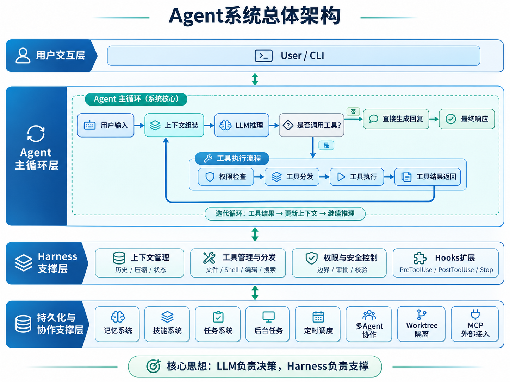

大模型与强化学习
大模型应用-Agent Harness 搭建
连接模型决策、工具执行与结果回传，集成技能加载、上下文压缩和多 Agent 协作。
工具调用闭环
技术实践
- 基于Claude Code 搭建 Agent Harness，集成终端执行、文件读写与任务管理，实现模型决策、工具调用、结果回传的闭环流程。
- 引入 Skill 按需加载与上下文压缩，根据任务加载技能说明，通过历史裁剪、工具结果清理与摘要压缩控制上下文规模。
- 集成 子 Agent 与多 Agent 协作机制，支持任务拆分、消息通信和独立上下文，结合权限检查与 Hook 管理工具执行。
- 使用 FastAPI + Transformers 实现 Anthropic API 兼容服务，接入本地 Qwen3.5-4B，完成消息格式转换、工具调用解析与结果回传
项目图片
